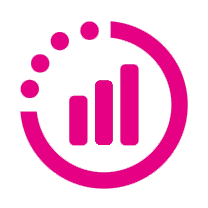

Progressió
Una progressió adequada per cada tipus de persona implica tenir en compte les seves necessitats, objectius, limitacions i capacitats. Això permet un desenvolupament personalitzat, equilibrat i sostenible, potenciant l'autonomia i l'èxit.
Workout
Una progressió adequada per cada tipus de persona implica tenir en compte les seves necessitats, objectius, limitacions i capacitats. Això permet un desenvolupament personalitzat, equilibrat i sostenible, potenciant l'autonomia i l'èxit.